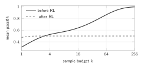

6 The KL-regularized optimum: why RL mostly sharpens
\[\max_{\pi}\ \mathbb{E}_{y\sim\pi}[R(x,y)]-\beta\,D_{\mathrm{KL}}\big(\pi\,\|\,\pi_{\mathrm{ref}}\big) \quad\Longrightarrow\quad \pi^\star(y\mid x)=\frac{\pi_{\mathrm{ref}}(y\mid x)\,e^{R(x,y)/\beta}}{Z(x)},\] \[\text{where}\quad Z(x)=\sum_y\pi_{\mathrm{ref}}(y\mid x)\,e^{R(x,y)/\beta}\ \text{ makes the probabilities sum to one.}\]
Derivation (Gibbs variational identity). Expand \(D_{\mathrm{KL}}(\pi\|\pi^\star)=\sum_y\pi\log\frac{\pi}{\pi^\star}=D_{\mathrm{KL}}(\pi\|\pi_{\mathrm{ref}})-\frac1\beta\mathbb{E}_\pi[R]+\log Z\). Multiplying by \(-\beta\): \[\mathbb{E}_\pi[R]-\beta D_{\mathrm{KL}}(\pi\|\pi_{\mathrm{ref}})=\beta\log Z-\beta\,D_{\mathrm{KL}}(\pi\|\pi^\star).\] The left side is our objective; the right side is largest when \(D_{\mathrm{KL}}(\pi\|\pi^\star)=0\), that is \(\pi=\pi^\star\). The same identity gives DPO its closed form (Rafailov et al., 2023).
Two consequences. (i) Support is kept: if \(\pi_{\mathrm{ref}}(y\mid x)=0\), then \(\pi^\star(y\mid x)=0\). RL re-weights what the base model can already say. (ii) Binary rewards multiply the odds: with success probability \(p\) under \(\pi_{\mathrm{ref}}\), \[\frac{p^\star}{1-p^\star}=\frac{p}{1-p}\,e^{1/\beta}.\]
With \(\beta=0.1\), \(e^{1/\beta}=e^{10}\approx 22{,}026\).
| base success \(p\) | \(0.1\) | \(10^{-3}\) | \(10^{-6}\) |
|---|---|---|---|
| optimum \(p^\star\) | \(0.9996\) | \(0.957\) | \(0.022\) |
The optimum can turn a \(1\)-in-\(1000\) answer into a \(96\%\) answer. But the optimum is not the training run: with \(G\) samples per problem, the chance of seeing even one success is \(1-(1-p)^G\). For \(G=8\) and \(p=10^{-3}\) this is \(0.008\). In practice RL mostly amplifies what the base model already produces often.
This formula is the “sharpen versus expand” debate in one line. Self-play’s real lever is different: the Challenger changes the problems \(x\), building stepping stones on which \(p(x)\) is not tiny. Re-weighting \(y\) alone cannot do that.
7 pass@\(k\), coverage and the sharpening signature
For one problem, \(\mathrm{pass@}k=1-(1-p)^k\). From \(n\ge k\) samples with \(c\) correct, \[\widehat{\mathrm{pass@}k}=1-\binom{n-c}{k}\Big/\binom{n}{k}.\] Why: pick \(k\) of the \(n\) samples at random; the pick fails only if all \(k\) are wrong, which happens with probability \(\binom{n-c}{k}/\binom nk\).
\(n=10\), \(c=2\), \(k=5\): \(\binom85/\binom{10}5=56/252=0.222\), so pass@5 \(=0.778\). The plug-in value \(1-(1-0.2)^5=0.672\) is biased low on average, because \((1-\hat p)^k\) is convex in \(\hat p\) (Jensen’s inequality).
Two problems. Training moves A from \(p=0.60\) to \(0.95\) and B from \(p=0.02\) to \(0\).
| before | after | |
|---|---|---|
| pass@1 | \(0.31\) | \(0.475\) |
| pass@256 | \(0.997\) | \(0.500\) |
mean over problems A and B

For B before training, \(1-0.98^{256}=1-e^{256\ln 0.98}=1-e^{-5.17}=0.994\). pass@1 rises while pass@256 falls: the model became more reliable on what it knew and lost what it could only sometimes do. The curves cross between \(k=3\) and \(k=4\). Yue et al. (2025) report this pattern for RLVR at large \(k\).
Report pass@\(k\) up to large \(k\) (256 or more), and count newly solved problems: problems with base pass@256 \(=0\) that the trained model solves. Only those support the word “expand”.
8 Entropy and exploration
The policy entropy \(H(\pi(\cdot\mid x))=-\sum_y\pi(y\mid x)\log\pi(y\mid x)\) measures how varied the samples are. As RL sharpens, entropy falls; groups become uniform; advantages become \(0\); learning stops. This is entropy collapse. Common remedies are a larger upper clip range (“clip-higher”, \(\varepsilon_{\mathrm{high}}>\varepsilon_{\mathrm{low}}\), in DAPO), an entropy bonus, higher sampling temperature, and dropping zero-variance groups. Section 11 shows that a majority-vote reward is itself an entropy-minimizing objective.
Exercises
Exercise 3. With \(\beta=0.2\) and base success \(p=0.01\), what is \(p^\star\) at the KL-regularized optimum?
Show answer
Odds \(0.0101\times e^{5}=0.0101\times148.4=1.50\), so \(p^\star=1.50/2.50=0.60\).
Exercise 4. Use the estimator with \(n=16\), \(c=1\), \(k=8\). Then show that with a single correct sample (\(c=1\)) the estimate is always \(k/n\).
Show answer
\(1-\binom{15}{8}/\binom{16}{8}=1-6435/12870=0.5\). In general, \(\binom{n-1}{k}/\binom nk=(n-k)/n\), so the estimate is \(k/n\).
References
- Q. Yu et al. DAPO: An Open-Source LLM Reinforcement Learning System at Scale. arXiv:2503.14476, 2025.
- R. Rafailov et al. Direct Preference Optimization. arXiv:2305.18290, 2023.
- M. Chen et al. Evaluating Large Language Models Trained on Code (unbiased pass@\(k\)). arXiv:2107.03374, 2021.
- Y. Yue et al. Does Reinforcement Learning Really Incentivize Reasoning Capacity in LLMs Beyond the Base Model? arXiv:2504.13837, 2025.
Citation
Cited as:
Chakma, Chandak. (Nov 2026). What RL Can and Cannot Do: Sharpening, pass@k and Entropy. Chandak’s Notes. https://chandakchakma.github.io/notes/what-rl-can-do.html
@article{chakma2026whatrlcando,
title = "What RL Can and Cannot Do: Sharpening, pass@k and Entropy",
author = "Chakma, Chandak",
journal = "chandakchakma.github.io",
year = "2026",
month = "Nov",
url = "https://chandakchakma.github.io/notes/what-rl-can-do.html"
}